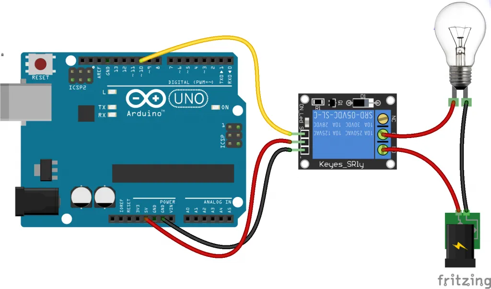

Prototipado con Arduino
En esta parte del Proyecto Sensor Motor les mostraré las conexiones e implementos del hardware Arduino.El hardware utilizado para poder realizar el proyecto Sensor Motor fue le siguiente:
Placa Arduino UNO, Protoboard, Focos LED, resistencias de 100 Ohmios, Sensor ultrasónico, Modúlo Relay y Cables Jumpers.
Todos los implementos mencionados anterioremente son del hardware proporcionado por Arduino.
Asi que empezemos. Primero vamos a ver como podemos conectar el Sensor de Distancia Ultrasónico, el cual nos permitira medir la distancia que hay entre el sensor y el agua. Este sensor emite un sonido mediante un pin llamado trigger el cual emite el pulso que permitira medir la distancia, y lo recibira un pin llamado echo que calculará la distancia que hay entre el sensor y el agua.
Ahora para la instalación de los leds los cuales me permitirán saber el nivel del agua. El LED rojo, me indica que el nivel del agua en el cilindro esta bajo y no debe encender el Motor. El LED naranja / amarillo, me indica que el nivel del agua esta por la mitad y que pronto encenderá el Motor. Por último el LED verde, me indica que el nivel del agua esta al tope y que procederá a enceder el Motor.
Las resistencias utilizadas son de 100 Ohmios.
Ahora bien pasaremos al diagrama del Modúlo Relay que se conectará con Arduino para permitirnos manejar una corriente de 200 voltios a una de 5 voltios, el cual es el voltaje que maneja la placa Arduino. Aunque si bien es cierto puede soportar hasta 20 voltios, pero seria sobrecargarlo y el Motor no funcionaria con tan bajo voltaje.
El Modúlo Relay cuenta con 3 pines, el primer pin es el que nos permite conectarlo a un puerto de entrada del arduino que le enviará las señales para que permita la continuidad de la corriente o no.
El segundo pin va conectado al puerto positivo 5v del arduino y el tercer pin al puerto negativo GND (ground).
Como se puede apreciar en el diagrama este enciende un foco, sin embargo reemplazaremos el foco por el Motor de Agua y la pila de 9v con una corriente alterna de 220v. Para lograr aquello debemos tener en cuenta la salidas del Modúlo Relay.
El pin al que estará conectado será el pin número 7.
Ahora la instalación de los leds y del Sensor Ultrasónico será de esta manera. Para acoplar el el Modúlo Relay solo será necesario seguir el diagrama antes visto, soló que debe ser el pin número 7 de arduino.
Por ultimo, las instalaciones del sensor ultrasonic, los Leds y el Modúlo Relay estarán unidos en un solo esquema. Sin embargo aún no estará listo ya que nos faltaría, darle vida con el código.
Ahora bien al ir al código les recomiendo usar primero el Modúlo Relay con un foco, para hacer pruebas, después de ello solo reemplazaremos el foco por el Motor de Agua.